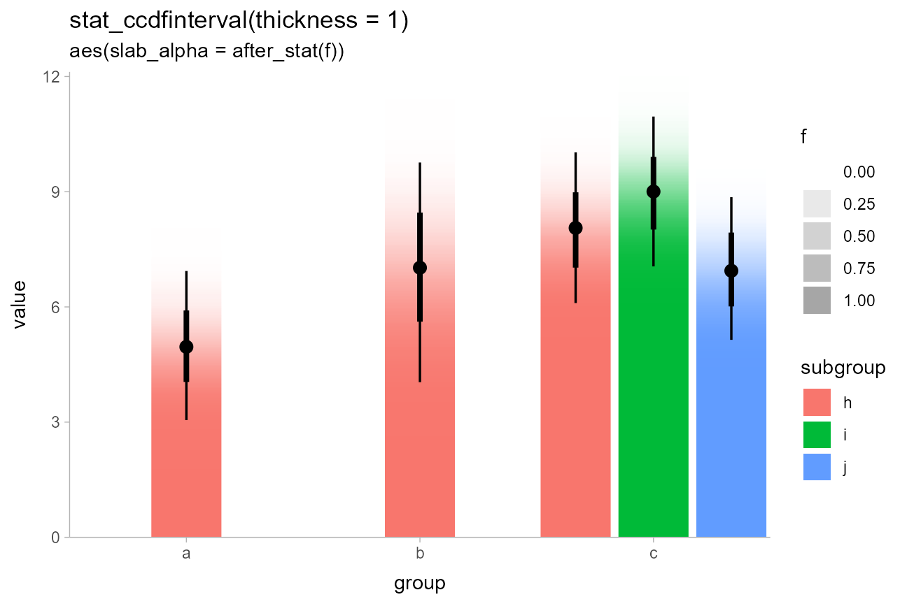
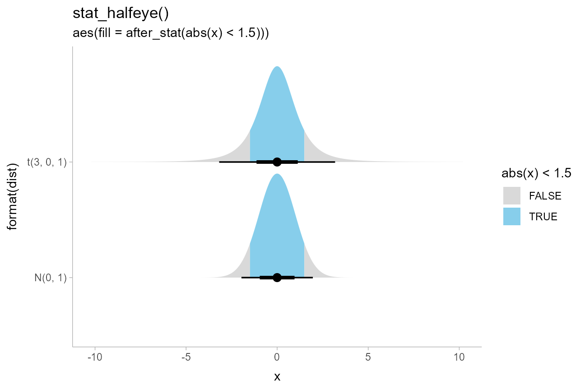

Slab + interval stats and geoms
Matthew Kay
2019-10-09
Source:vignettes/slabinterval.Rmd
slabinterval.RmdIntroduction
This vignette describes the slab+interval geoms and stats in tidybayes. This is a flexible family of stats and geoms designed to make plotting distributions (such as priors and posteriors in Bayesian models, or even sampling distributions from other models) straightforward, and support a range of useful plots, including intervals, eye plots (densities + intervals), CCDF bar plots (complementary cumulative distribution functions + intervals), gradient plots, and histograms.
Roadmap: It all starts with “slabinterval”

Tidybayes has a pantheon of geoms and stats that stem from a common root: geom_slabinterval() and stat_slabinterval(). These geoms consist of a “slab” (say, a density or a CDF), one or more intervals, and a point summary. These components may be computed in a number of different ways, and different variants of the geom will or will not include all components.
Using geom_slabinterval() and stat_slabinterval() directly is not necessarily advisable: they are highly configurable on their own, but this configurability requires remembering a bunch of combinations of options to use. Instead, tidybayes contains a number of pre-configured, easier-to-remember stats and geoms built on top of the slabinterval. These follow the following naming scheme:
[geom|stat|stat_dist]_[name][h|]
For example, stat_dist_eye(), stat_dist_eyeh, stat_eyeh, stat_pointinterval, geom_pointinterval, etc. The naming scheme works as follows:
- Geoms starting with
geom_are meant to be used on already-summarized data (typically data summarized into intervals): things likegeom_pointinterval()andgeom_interval(). - Stats starting with
stat_are meant to be used on sample data; e.g. draws from a posterior distribution (or any other distribution, really). These stats compute relevant summaries (densities, CDFs, points, and/or intervals) before forwarding the summaries to their geom. Some have geom counterparts (e.g.stat_interval()corresponds togeom_interval(), except the former applies to sample data and the latter to already-summarized data). Many of these stats do not currently have geom counterparts (e.g.stat_ccdfinterval), as they are primarily differentiated based on what kind of statistical summary they compute. If you’ve already computed a function (such as a density or CDF), you can just usegeom_slabinterval()directly. - Stats starting with
stat_distcan be used to create slab+interval geoms for analytical distributions. They take distribution names (thedistaesthetic) and arguments (theargsaesthetic orarg1, …arg9aesthetics) and compute the relevant slabs and intervals. Thus, wherestat_eyemakes an eye plot for sample data,stat_dist_eyemakes an eye plot for an analytical distribution.
We’ll start with one of the most common existing use cases for these kinds geoms: eye plots.
Eye plots and half-eye plots
On sample data: stat_[half]eye[h]
Eye plots combine densities (as violins) with intervals to give a more detailed picture of uncertainty than is available just by looking at intervals.
For these first few demos we’ll use these data:
set.seed(1234)
df = tribble(
~group, ~subgroup, ~value,
"a", "h", rnorm(1000, mean = 5),
"b", "h", rnorm(1000, mean = 7, sd = 1.5),
"c", "h", rnorm(1000, mean = 8),
"c", "i", rnorm(1000, mean = 9),
"c", "j", rnorm(1000, mean = 7)
) %>%
unnest(value)We can summarize it at the group level using an eye plot with stat_eye() (ignoring subgroups for now):

(Users of older versions of tidybayes might have used geom_eye(), which is the older spelling of stat_eye(). Due to the name standardization in this version of tidybayes (see the decription above), stat_eye() is now the preferred spelling, though geom_eye() will continue to work.)
We can also use stat_halfeye instead to just get densities:

Or use the side parameter to more finely control where the slab (in this case, the density) is drawn:
p = df %>%
ggplot(aes(x = group, y = value)) +
panel_border()
plot_grid(ncol = 3, align = "hv",
p + stat_eye(side = "left") + labs(title = "stat_eye()", subtitle = "side = 'left'"),
p + stat_eye(side = "both") + labs(subtitle = "side = 'both'"),
p + stat_eye(side = "right") + labs(subtitle = "side = 'right'")
)
Or show a horizontal version by appending h to stat_halfeye() to get stat_halfeyeh():

This is equivalent to setting orientation = "horizontal":
df %>%
ggplot(aes(x = value, y = group)) +
stat_halfeye(orientation = "horizontal") +
ggtitle("stat_halfeye(orientation = 'horizontal')")
Yielding these combinations:
p = df %>%
ggplot(aes(x = group, y = value)) +
panel_border()
ph = df %>%
ggplot(aes(y = group, x = value)) +
panel_border()
plot_grid(ncol = 2, align = "hv",
p + stat_eye() + labs(title = "stat_[half]eye[h]", subtitle = "stat_eye()"),
p + stat_halfeye() + labs(subtitle = "stat_halfeye()"),
ph + stat_eyeh() + labs(subtitle = "stat_eyeh()"),
ph + stat_halfeyeh() + labs(subtitle = "stat_halfeyeh()")
)
The side parameter works for stat_halfeye() as well. "top" and "right" are considered synonyms, as are "bottom" and "left"; either form works with both horizontal and vertical versions of the geoms:
p = df %>%
ggplot(aes(x = value, y = group)) +
panel_border()
plot_grid(ncol = 3, align = "hv",
# side = "left" would give the same result
p + stat_eyeh(side = "left") + ggtitle("stat_eyeh()") + labs(subtitle = "side = 'bottom'"),
p + stat_eyeh(side = "both") + labs(subtitle = "side = 'both'"),
# side = "right" would give the same result
p + stat_eyeh(side = "right") + labs(subtitle = "side = 'top'")
)
Eye plots are also designed to support dodging through the standard mechanism of position = "dodge". Unlike with geom_violin(), densities in groups that are not dodged (here, ‘a’ and ‘b’)the same area and max width as those in groups that are dodged (‘c’):
df %>%
ggplot(aes(x = group, y = value, fill = subgroup)) +
stat_eye(position = "dodge") +
ggtitle("stat_eye(position = 'dodge')")
On analytical distributions: stat_dist_[half]eye[h]
The same set of (half-)eye plot stats designed for sample data described above all have corresponding stats for analytical distributions: simply use stat_dist_ instead of stat_ in the name. These stats use the following aesthetics to produce plots of distributions:
-
dist: the name of the distribution, following R’s naming scheme. This is a string which should have"p","q", and"d"functions defined for it: e.g., “norm” is a valid distribution name because thepnorm(),qnorm(), anddnorm()functions define the CDF, quantile function, and density function of the Normal distribution. -
argsorarg1, …arg9: arguments for the distribution. If you useargs, it should be a list column where each element is a list containing arguments for the distribution functions; alternatively, you can pass the arguments directly usingarg1, …arg9.
For example, here are a variety of normal distributions describing the same data from the previous example:
dist_df = tribble(
~group, ~subgroup, ~mean, ~sd,
"a", "h", 5, 1,
"b", "h", 7, 1.5,
"c", "h", 8, 1,
"c", "i", 9, 1,
"c", "j", 7, 1
)We can visualize these distributions directly using stat_dist_eye():
dist_df %>%
ggplot(aes(x = group, dist = "norm", arg1 = mean, arg2 = sd, fill = subgroup)) +
stat_dist_eye(position = "dodge") +
ggtitle("stat_dist_eye(position = 'dodge')")
This makes it easy to visualize a variety of distributions. E.g., here are some Beta distributions:
data.frame(alpha = seq(5, 100, length.out = 10)) %>%
ggplot(aes(y = alpha, dist = "beta", arg1 = alpha, arg2 = 10)) +
stat_dist_halfeyeh() +
labs(
title = "stat_dist_halfeyeh()",
x = "Beta(alpha,10) distribution"
)
If you want to plot all of these on top of each other (instead of stacked), you could turn off plotting of the interval to make the plot easier to read using stat_dist_halfeyeh(show_interval = FALSE, ...). You can also set the outline color of the slab using the slab_color aesthetic, and change the fill color using fill:
data.frame(alpha = seq(5, 100, length.out = 10)) %>%
ggplot(aes(y = "", dist = "beta", arg1 = alpha, arg2 = 10, slab_color = alpha)) +
# show.legend = TRUE is currently necessary here due to a bug in ggplot
stat_dist_halfeyeh(show_interval = FALSE, fill = NA, show.legend = TRUE) +
coord_cartesian(expand = FALSE) +
# you can set color scales on the "slab_color" aesthetic by passing
# `guide` and `aesthetics` parameters to existing color scale functions:
scale_color_viridis_c(guide = "colorbar2", aesthetics = "slab_color") +
labs(
title = "stat_dist_halfeyeh(show_interval = FALSE, fill = NA)",
x = "Beta(alpha,10) distribution",
y = NULL
) 
stat_dist_slabh() is a shortcut geom for something like stat_dist_halfeyeh(show_interval = FALSE, ...), with some simplifications: since it does not have the interval attached to it, it does not require you to use slab_color to target the outliine color; you can use color directly. This simplifies things somewhat:
data.frame(alpha = seq(5, 100, length.out = 10)) %>%
ggplot(aes(y = "", dist = "beta", arg1 = alpha, arg2 = 10, color = alpha)) +
stat_dist_slabh(fill = NA) +
coord_cartesian(expand = FALSE) +
scale_color_viridis_c() +
labs(
title = "stat_dist_slabh(fill = NA)",
x = "Beta(alpha,10) distribution",
y = NULL
)
The approach using arg1, … arg9 can work well when comparing similar distributions, but is harder to use with different distribution types. For example, if we wished to compare a Student t distribution and Normal distribution, the arguments may not line up. This is a good case to use list columns and the args aesthetic. We’ll use it along with the brms package’s implementation of the scaled and shifted Student t distribution (brms::dstudent_t(), etc):
tribble(
~ dist, ~ args,
"norm", list(0, 1),
"student_t", list(3, 0, 1)
) %>%
ggplot(aes(y = dist, dist = dist, args = args)) +
stat_dist_halfeyeh() +
ggtitle("stat_dist_halfeyeh()")
A particularly good use of the dist stats is to visualize priors. For example, with brms you can specify priors using the brms::prior() function. E.g., I might set some priors on the betas and the standard deviation in a model:
# NB these priors are made up!
c(
prior(normal(0,1), class = b),
prior(lognormal(0,1), class = sigma)
)## prior class coef group resp dpar nlpar bound
## 1 normal(0, 1) b
## 2 lognormal(0, 1) sigmaThe parse_dist function can make it easier to visualize these: it takes in string specifications like those produced by brms — "normal(0,1)" and "lognormal(0,1)" above — and translates them into .dist and .args columns:
## prior class coef group resp dpar nlpar bound .dist .args
## 1 normal(0, 1) b norm 0, 1
## 2 lognormal(0, 1) sigma lnorm 0, 1Notice that it also automatically translate some common distribution names (e.g. “normal” and “lognormal”) into their equivalent R function names ("norm" and "lnorm"). This makes it easy to use them with stat_dist_eye() and its variants:
c(
prior(normal(0,1), class = b),
prior(lognormal(0,1), class = sigma)
) %>%
parse_dist(prior) %>%
ggplot(aes(y = class, dist = .dist, args = .args)) +
stat_dist_halfeyeh() +
labs(
title = "stat_dist_halfeyeh()",
subtitle = "with brms::prior() and tidybayes::parse_dist() to visualize priors",
x = NULL
)
The stat_dist_... family also adjusts densities appropriately when scale transformations are applied. For example, here is a log-Normal distribution plotted on a log scale:
data.frame(dist = "lnorm") %>% ggplot(aes(y = 1, dist = dist, arg1 = log(10), arg2 = 2*log(10))) +
stat_dist_halfeyeh() +
scale_x_log10(breaks = 10^seq(-5,7, by = 2))
As expected, a log-Normal density plotted on the log scale appears Normal. The Jacobian for the scale transformation is applied to the density so that the correct density is shown on the log scale. Internally, numerical differentiation is used to calculate the Jacobian so that the stat_dist_... family works generically across the different scale transformations supported by ggplot.
Summing up eye plots: stat_[dist_][half]eye[h]
All of the above geoms follow the naming scheme stat_[dist_][half]eye[h].
- Add
dist_to the name to get stats for analytical distributions (otherwise it is for sample data). - Add
halfto the name to get half-eyes (densities) instead of eyes (violins). - Add
hto the name to get the horizontal version.
Histogram + interval plots
In some cases you might prefer histograms to density plots. stat_histinterval[h] provides an alternative to stat_halfeye[h] that uses histograms instead of densities:
p = df %>%
ggplot(aes(x = group, y = value)) +
panel_border()
ph = df %>%
ggplot(aes(y = group, x = value)) +
panel_border()
plot_grid(ncol = 2, align = "hv",
p + stat_histinterval() + labs(title = "stat_histinterval[h]", subtitle = "stat_histinterval()"),
ph + stat_histintervalh() + labs(subtitle = "stat_histintervalh()")
)
There are currently no analytical (stat_dist_) versions of stat_histinterval() / stat_histintervalh().
CCDF bar plots
Another (perhaps sorely underused) technique for visualizing distributions is cumulative distribution functions (CDFs) and complementary CDFs (CCDFs). These can be more effective for some decision-making tasks than densities or intervals, and require fewer assumptions to create from sample data than density plots.
For all of the examples above, both on sample data and analytical distributions, you can replace [half]eye with [c]cdfinterval to get a stat that creates a CDF or CCDF bar plot.
On sample data: stat_[c]cdfinterval[h]
stat_[c]cdfinterval[h] has the following basic combinations:
p = df %>%
ggplot(aes(x = group, y = value)) +
panel_border()
ph = df %>%
ggplot(aes(y = group, x = value)) +
panel_border()
plot_grid(ncol = 2, align = "hv",
p + stat_ccdfinterval() + labs(title = "stat_[c]cdfinterval[h]", subtitle = "stat_ccdfinterval()"),
ph + stat_ccdfintervalh() + labs(subtitle = "stat_ccdfintervalh()"),
p + stat_cdfinterval() + labs(subtitle = "stat_cdfinterval()"),
ph + stat_cdfintervalh() + labs(subtitle = "stat_cdfintervalh()")
)
The CCDF interval plots are probably more useful in general, as the bars typical grow up from the baseline. For example, replacing stat_eye() with stat_ccdfinterval() in our previous subgroup plot produces CCDF bar plots:
df %>%
ggplot(aes(x = group, y = value, fill = subgroup, group = subgroup)) +
stat_ccdfinterval(position = "dodge") +
ggtitle("stat_ccdfinterval(position = 'dodge')") 
The extents of the bars are determined automatically by range of the data in the samples. However, for bar charts it is often good practice to draw the bars from a meaningful reference point (this point is often 0). You can use ggplot2::expand_limits() to ensure the bar is drawn down to 0:
df %>%
ggplot(aes(x = group, y = value, fill = subgroup)) +
stat_ccdfinterval(position = "dodge") +
expand_limits(y = 0) +
# plus coord_cartesian so there is no space between bars and axis
coord_cartesian(expand = FALSE) +
ggtitle("stat_ccdfinterval(position = 'dodge')")
You can also adjust the position of the slab relative to the position of the interval using the justification parameter:
df %>%
ggplot(aes(x = group, y = value, fill = subgroup)) +
stat_ccdfinterval(position = "dodge", justification = 1) +
expand_limits(y = 0) +
# clip = "off" needed here to ensure interval at the edge is visible
coord_cartesian(expand = FALSE, clip = "off") +
ggtitle("stat_ccdfinterval(position = 'dodge', justification = 1)")
The side parameter also works as with stat_eye(). Here we’ll demonstrate with stat_ccdfintervalh(), the horizontal version:
p = df %>%
ggplot(aes(x = value, y = group)) +
expand_limits(x = 0) +
panel_border()
plot_grid(ncol = 3, align = "hv",
# side = "left" would give the same result
p + stat_ccdfintervalh(side = "bottom") + ggtitle("stat_ccdfintervalh()") + labs(subtitle = "side = 'bottom'"),
p + stat_ccdfintervalh(side = "both") + labs(subtitle = "side = 'both'"),
# side = "right" would give the same result
p + stat_ccdfintervalh(side = "top") + labs(subtitle = "side = 'top'")
)
On analytical distributions: stat_dist_[c]cdfinterval[h]
You can also use stat_dist_ccdfinterval() instead if you wish to visualize analytical distributions, just as you can use stat_dist_eye().
By default, stat_dist_ccdfinterval() uses the quantiles at p = 0.001 and p = 0.999 in the distributions are used to determine their extrant. You can change this setting using the p_limits parameter, or use expand_limits() to ensure a particular value is shown as before:
dist_df %>%
ggplot(aes(x = group, dist = "norm", arg1 = mean, arg2 = sd, fill = subgroup)) +
stat_dist_ccdfinterval(position = "dodge") +
expand_limits(y = 0) +
ggtitle("stat_dist_ccdfinterval(position = 'dodge')") +
coord_cartesian(expand = FALSE)
Summing up CDF bar plots: stat_[dist_][c]cdfinterval[h]
All of the above geoms follow the naming scheme stat_[dist_][c]cdfinterval[h].
- Add
dist_to the name to get stats for analytical distributions (otherwise it is for sample data). - Add
cto the name to get CCDFs instead of CDFs. - Add
hto the name to get the horizontal version.
Gradient plots
An alternative approach to mapping density onto the thickness aesthetic of the slab is to instead map it onto its alpha value (i.e., opacity). This is what the stat_[dist_]gradientinterval[h] family does (actually, it uses slab_alpha, a variant of the alpha aesthetic).
On sample data: stat_gradientinterval[h]
For example, replacing stat_eye() with stat_gradientinterval() produces gradient + interval plots:
df %>%
ggplot(aes(x = group, y = value, fill = subgroup)) +
stat_gradientinterval(position = "dodge") +
labs(title = "stat_gradientinterval(position = 'dodge')")
stat_gradientinterval() maps density onto the slab_alpha aesthetic, which is a variant of the ggplot alpha scale that specifically targets alpha (opacity) values of the slab portion of geom_slabinterval(). This aesthetic has default ranges and limits that are a little different from the base ggplot alpha scale and which ensure that densities of 0 are mapped onto opacities of 0. You can use scale_slab_alpha_continuous() to adjust this scale’s settings.
On analytical distributions: stat_dist_[c]cdfinterval[h]
As with other plot types, you can also use stat_dist_gradientinterval() instead if you wish to visualize analytical distributions:
dist_df %>%
ggplot(aes(x = group, dist = "norm", arg1 = mean, arg2 = sd, fill = subgroup)) +
stat_dist_gradientinterval(position = "dodge") +
labs(title = "stat_dist_gradientinterval(position = 'dodge')")
Dotplots
The encodings thus far are continuous probability encodings: they map probabilities or probability densities onto aesthetics like x/y position or transparency. An alternative is discrete or frequency-framing uncertainty visualizations, such as dotplots and quantile dotplots. These represent distributions as number of discrete possible outcomes.
On sample data: stat_dots[h]
For example, replacing stat_halfeye() with stat_dots() produces dotplots:
df %>%
ggplot(aes(x = group, y = value, fill = subgroup)) +
stat_dots(position = "dodge") +
labs(title = "stat_dots(position = 'dodge')")
Unlike the base ggplot2::geom_dotplot() geom, tidybayes::geom_dots() automatically determines a bin width to ensure that the dot stacks fit within the available space. With so few dots here, it makes sense to turn off the outline color (slab_color) of the dots:
df %>%
ggplot(aes(x = group, y = value, fill = subgroup)) +
stat_dots(position = "dodge", slab_color = NA) +
labs(title = "stat_dots(slab_color = NA)")
Quantile dotplots
The above plots are a bit hard to read due to the large number of dots. Particularly when summarizing posterior distributions or predictive distributions, it can make sense to plot a smaller number of dots (say 20, 50 or 100) that are representative of the full sample. One such approach is to plot quantiles, thereby creating quantile dotplots, which can help people make decisions under uncertainty (Kay 2016, Fernandes 2018).
The quantiles argument to stat_dots constructs a quantile dotplot with the specified number of quantiles. Here is one with 50 quantiles, so each dot represents approximately a 2% (1/50) chance:
df %>%
ggplot(aes(x = group, y = value, fill = subgroup)) +
stat_dots(position = "dodge", quantiles = 50) +
labs(title = "stat_dots(quantiles = 50)")
On analytical distributions: stat_dist_dots[h]
As with other plot types, you can also use stat_dist_dots() instead if you wish to visualize analytical distributions. Analytical dotplots default to 100-dot quantile dotplots (as above, this can be adjusted with the quantiles argument):
dist_df %>%
ggplot(aes(x = group, dist = "norm", arg1 = mean, arg2 = sd, fill = subgroup)) +
stat_dist_dots(position = "dodge") +
labs(title = "stat_dist_dots(position = 'dodge')")
Shapes of the dots can also be changed using the shape aesthetic, and as with all slabinterval geoms, fill and color aesthetics can be varied within the geoms:
dist_df %>%
ggplot(aes(x = group, dist = "norm", arg1 = mean, arg2 = sd, fill = stat(y < 5), shape = subgroup)) +
stat_dist_dots(position = "dodge") +
labs(title = "stat_dist_dots(aes(fill = stat(y < 5), shape = subgroup))") +
# we'll use these shapes since they retain outlines
scale_shape_manual(values = c(21,22,23))
As with other slabinterval geoms, the side argument can also be used to construct violin-style dotplots. This example also shows the use of dotsinterval in place of dots to construct a combined quantile dotplot violin + interval plot. We also set slab_color = NA to turn off the outline on the dots:
dist_df %>%
ggplot(aes(x = group, dist = "norm", arg1 = mean, arg2 = sd, fill = subgroup)) +
stat_dist_dotsinterval(position = "dodge", side = "both", slab_color = NA) +
labs(title = "stat_dist_dotsinterval(side = 'both', slab_color = NA)") 
Summing up dotplots: stat_[dist_]dots[interval][h]
All of the above geoms follow the naming scheme stat_[dist_]dots[interval][h].
- Add
dist_to the name to get stats for analytical distributions (otherwise it is for sample data). - Add
intervalto the name to get the version with a point+interval geom overlaid. - Add
hto the name to get the horizontal version.
Custom plots
The slabinterval family of stats and geoms is designed to be very flexible. Most of the shortcut geoms above can be created simply by setting particular combinations of options and aesthetic mappings using the basic geom_slabinterval(), stat_sample_slabinterval(), and stat_dist_slabinterval(). Some useful combinations do not have specific shortcut geoms currently, but can be created manually with only a bit of additional effort.
Gradients of alpha, color, and fill
Two aesthetics of particular use for creating custom geoms are slab_alpha, which changes the alpha transparency of the slab portion of the geom, slab_color, which changes its outline color, and fill, which changes its fill color. All of these aesthetics can be mapped to variables along the length of the geom (that is, the color does not have to be constant over the entire geom), which allows you to create gradients or to highlight meaningful regions of the data (amongst other things).
CCDF Gradients
For example, stat_ccdfinterval maps the output of the evaluated function (in its case, the CCDF) onto the thickness aesthetic of the slabinterval geom, which determines how thick the slab is. This is the equivalent of setting aes(thickness = stat(f)). However, we could instead create a CCDF gradient plot, a sort of mashup of a CCDF barplot and a density gradient plot, by mapping stat(f) onto the slab_alpha aesthetic instead, and setting thickness to a constant (1):
df %>%
ggplot(aes(x = group, y = value, fill = subgroup)) +
stat_ccdfinterval(aes(slab_alpha = stat(f)), thickness = 1, position = "dodge") +
expand_limits(y = 0) +
# plus coord_cartesian so there is no space between bars and axis
coord_cartesian(expand = FALSE) +
ggtitle("stat_ccdfinterval(aes(slab_alpha = stat(f)), thickness = 1)")
Highlighting and other combinations
The ability to map arbitrary variables onto fill or outline colors within a slab allows you to easily highlight subregions of a plot. Take the earlier example of visualizing priors:
priors = tribble(
~ dist, ~ args,
"norm", list(0, 1),
"student_t", list(3, 0, 1)
)
priors %>%
ggplot(aes(y = dist, dist = dist, args = args)) +
stat_dist_halfeyeh() +
ggtitle("stat_dist_halfeyeh()")
We can add a mapping to the fill aesthetic to highlight a region of interest, say ±1.5:
priors %>%
ggplot(aes(y = dist, dist = dist, args = args)) +
stat_dist_halfeyeh(aes(fill = stat(abs(x) < 1.5))) +
ggtitle("stat_dist_halfeyeh(aes(fill = stat(abs(x) < 1.5)))") +
# we'll use a nicer palette than the default for highlighting:
scale_fill_manual(values = c("gray85", "skyblue"))
We could also combine these aesthetics arbitrarily. Here is a (probably not very useful) eye plot + gradient plot combination, with the portion of the distribution above 1 highlighted:
priors %>%
ggplot(aes(y = dist, dist = dist, args = args)) +
stat_dist_eyeh(aes(alpha = stat(f), fill = stat(x > 1))) +
ggtitle("stat_dist_eyeh(aes(alpha = stat(f), fill = stat(x > 1)))") +
# we'll use a nicer palette than the default for highlighting:
scale_fill_manual(values = c("gray75", "skyblue"))